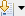
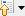
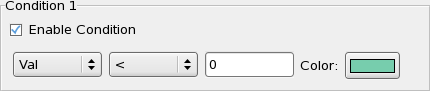
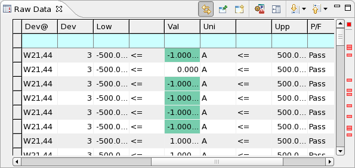

Highlighting specific data
In the summary and raw data tables of the Integrated Result Tool, cells that meet specific conditions and failed test can be automatically highlighted.
About this task
Highlight failed tests or cells meeting specific conditions to more easily identify tests of interest.
Before you begin
Load the data log or stream that you want to examine and open it to see its summary view.
Procedures
Highlighting failed tests
By default, failed tests are indicated by icons in the left margins of summary views, raw data views, and the stream data view. They are also indicated by red rectangles in the right margins of these views. (In summary views, a row is highlighted when at least one of the tests it summarizes has failed.)
- To configure the display of fail icons in the left margins and rectangles in the right margins, choose and open the preferences page .
- Click the Failed Test annotation type and adjust the settings as
desired.
For details, see Annotations preference settings.
- If you want to continue setting preferences, click Apply. If you are done, click OK.
- To highlight rows that contain failed tests with a red background, open the Alerts preferences
page and check the Highlight Failed Tests options.
This option applies only to the raw data view and the stream data view.
- If you want to continue setting preferences, click Apply. If you are done, click OK.
Creating annotations when cells meet specified conditions
- To specify which conditions will trigger an alert, open the preferences page Advantest
V93000 > Result Tool > Alerts.
Here you can specify up to four conditions that cause a cell to be highlighted and indicated by an icon in the left margin and/or a colored rectangle in the right margin.
- To specify a condition, check the Enable Condition option for the condition (condition 1, 2, 3, or 4) that you want to use.
- From the left drop-down list, choose the column in which you want to highlight cells.
- From the right drop-down list, choose the desired comparison operator.
- In the text field, enter the comparison value.
- Click the Color field and choose the desired highlight color for cells for which meet the specified comparison.
- If you want to specify additional conditions, repeat steps 2 to 6.
You can specify up to four highlighting conditions. A cell is highlighted when it meets at least one condition.
- If you want to continue setting preferences, click Apply. If you are done, click OK.
- To configure the display of alert icons in the left margins and rectangles in the right margins, open the preferences page Advantest V93000 > Result Tool > Annotations.
- Click the Alerts annotation type and adjust the settings as desired.
For details, see Annotations preference settings.
Navigating highlights
You can use these methods to jump to highlighted cells or rows:
- Clicking in the overview ruler (the right margin of the table view): Click on a colored rectangle to display the row that contains the corresponding annotation (fail or alert).
- In Raw data views and the Stream data view, you can also use toolbar buttons:

Jump to the next annotation (fail or alert).
Jump to the previous annotation (fail or alert).You can specify in the drop-down menus of the buttons to which kinds of annotations you want to jump.
Results
Depending on the settings you have specified, failed tests (and summary rows summarizing at least one failed test) are indicated in some or all of these ways:
- An icon
 in the left margin of the table.
in the left margin of the table. - A colored rectangle in the right margin of the table.
- In the raw data view or stream data view, a red background of the row.
Cells that meet one of the conditions you have defined are indicated in these ways:
- An icon
 in the left margin of the table.
in the left margin of the table. - A colored rectangle in the right margin of the table.
- A colored background of the cell.
Example
If the display of fails in the left and right margins is switched on, the display of alerts is switched off, and this condition is defined:

Then a raw data view might look like this:

Functional changes
- Introduced in SmarTest 7.2.0